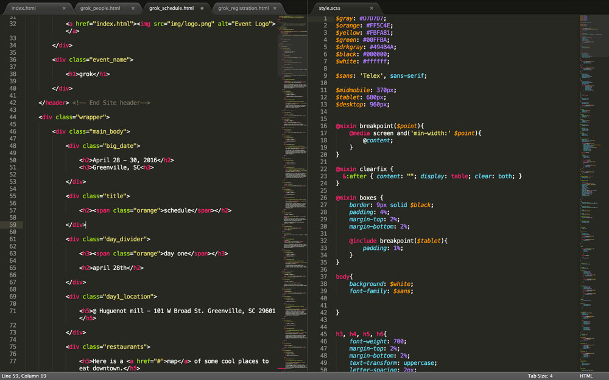
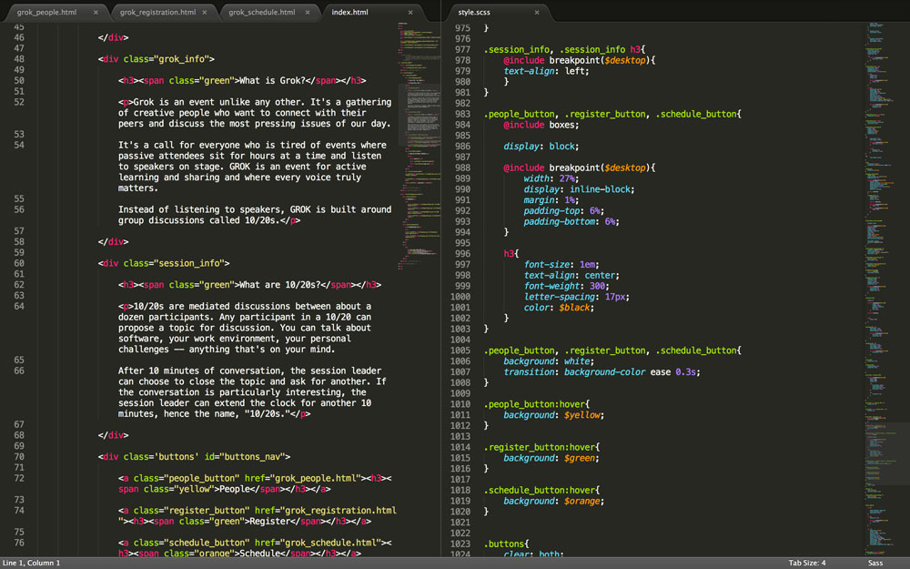

GROK is an event unlike any other. It’s a gathering of creative people who want to connect with their peers and discuss the most pressing issues of our day.
The term GROK was originally coined by Robert A. Heinlein in his book, Stranger in a Strange Land. Stranger in a Strange Land tells the story of a boy raised by Martians who must then learn how to be a human again. In the story, ‘Grok’ is a Martian word that means to understand something or someone with utter completeness and empathy. In the spirit of Heinlein’s idea, GROK is designed to promote and encourage interaction and engagement between participants, so don’t expect to sit passively and listen to a speaker.
Instead of listening to speakers, GROK is built around group discussions called 10/20s.
10/20s are mediated discussions between about a dozen participants. Any participant in a 10/20 can propose a topic for discussion. You can talk about software, your work environment, your personal challenges–anything that’s on your mind.
After 10 minutes of conversation, the session leader can choose to close the topic and ask for another. If the conversation is particularly interesting, the session leader can extend the clock for another 10 minutes, hence the name, “10/20s.”
Think of GROK as an “unconference” - “a small-batch event.” GROK is unlike most conferences in a number of great ways. Most conferences focus on providing headline speakers to bring in a crowd. The crowd is usually separated from the presenters by a stage and dark lighting that doesn't allow the presenter and the crowd to interact. GROK doesn't run this way.
There are times when there is a single speaker and everyone else is listening. But those talks and demonstrations were sprinkled into the schedule as a way to break up the core part of the event; talking to each other in small groups.
The website for GROK seeks to drive event registrations by quickly and clearly explaining the concept of the event, what makes it unique from other “web” conferences, and what attendees can expect to take away from the event.
The primary audience for GROK are creative professionals: designers, developers, musicians, artists, writers, etc., who are looking for an alternative to other large-scale events that feature well-known presenters in lecture or workshop formats, and instead prefer a small event where they can develop relationships and real conversations with other professionals.
The brand for GROK is that of an “un-conference.” Fun, quirky, personable, and doesn’t take itself too seriously, yet possesses a level of professionalism and quality that sets it apart from other events. Event swag, signage, and other materials are cleanly, professionally designed, and show an appreciation to detail. Word-of-mouth about this event is positive and strong, and most previous attendees highly recommend the event to others.
In the design process, I start with wireframes because I want to know what type of content I'm working with and how much.
Once I have a general idea of the content, I start focusing on how to organize it. I chose to divide this site into 4 separate pages -- Homepage, Registration, People, and Schedule. I thought these categories would be simple and clear for the end user.
Now that I have wireframes to show me the content I am working with, I start sketching my ideas on paper.
Working out the general layout and certain details such as how buttons are going to look, alignment, and scale of text ensures that I’m not going into Photoshop blindly to start my mockups.
At this point, I've also created a mood board in Photoshop, which is an ongoing compilation of colors, fonts, images, or styles that represents what I have in mind for the project's look and feel.
After establishing a solid design, it’s time to code.
What you see in the first image (top righthand side) is an example of some variables I created using SASS, which is a CSS extension language.
I created variables for the colors, so I could quickly use them throughout the code without having to repeatedly reference the hexadecimal colors.
I also created a few 'mixins’ using SASS, which apply multiple properties to an element at time. In this case, I used the mixin to ensure consistent margin and padding for the large buttons on the homepage.
 